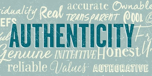

I never thought I’d be in vogue. And no, I’m not talking about the magazine. Rather, I’m talking about being authentic – my lifelong calling card.
Now, authenticity is the prescription for everything. As AP reports, it’s all about “Authentic cuisine. Authentic voice. Authentic self. Authenticity as artifice.”
Merriam-Webster even chose Authentic as the word of the year in 2023.
Regardless of how overused the word has become, the focus on authenticity remains a welcome change. After all, it is the right to be true to yourself and your values. It’s about being open, honest, and keeping it real.
As AP implies, it also has broad applications.
Social scientists and psychologists herald authenticity as the ability to embrace the uniqueness that defines us and become more attuned to the people we are destined to be.
This is meant for everyone, but it may be of special value to women. I can catalog my own 30+ year career in financial services, consulting, and politics and point to how often we women subjugated the best parts of ourselves to be taken seriously.
Now, many “feminine” attributes once dismissed – compassion, empathy, vulnerability, and sensitivity – are being embraced and encouraged for their authenticity. There are clear benefits to this approach.
In 2015, the Harvard Business Review published “Why Compassion is a Better Management Tool than Toughness." The article points to neuroimaging research that confirms our brains respond more positively to bosses who show us empathy. It also concludes that this softer approach engenders employee trust.

Many of us know this is true. When we share our personal feelings, perspectives, and experiences, all within respectable boundaries, we demonstrate who we are and create more interpersonal bonds. This leads to developing more meaningful relationships and productive work environments.
Authenticity is also informing the latest trends in branding, marketing, and communications. With skeptical consumers inherently less likely to trust brands, authenticity has become a helpful antidote.
Branding strategies are moving beyond espousing what companies do and what makes them unique to include a statement of values. But this alone does not prove authenticity. Companies must act on their values, carefully choose like-minded business partners, and deliver on their promises consistently, and over time.
Authenticity is also coloring customer outreach strategies. As I shared in "2024: Welcome to the Creator Era" consumers are looking for content that is both relatable and sincere, with a preference for personal stories. This explains why realistic “garage feel” video has become popular, and why Reddit, the social news aggregator, has become more mainstream.
Once again, I’m feeling a bit voguish.
When major corporate scandals (think Enron) dominated the marketplace two decades ago, my first Insight, “Truth in Communications" argued for more honest and direct communications to regain consumer trust. I updated the piece in 2017, retitling it "Truth: An Enduring Point of Differentiation."
Now, with a focus on authenticity, this has never been more relevant.
I’m a believer in authenticity but I’m not naïve. After all, authenticity may cause but does not give license to, bad behavior. That's not acceptable in any circumstance.
Nor should authenticity be artifice. It is not meant to be artful. That defeats its purpose. That said, authenticity can be hard. If we’re true to ourselves, we’re likely to face professional challenges that conflict with our innermost values. We must ask the tough questions – can I affect change or is it time to move on? And in those branding, marketing, communications, and executive leadership scenarios, when a problem needs to be addressed or a major decision needs to be made, authenticity may result in short-term, painful hiccups but present the right solution for the long term. While writing this piece, the following LinkedIn post by Mads Cadwell of 212Communications appeared on my feed:
Yes, it is. Showing our humanity – whether as individuals or as organizations – connects us with colleagues, customers, and consumers alike. It also sets forth a path that allows us to fix mistakes we make along the way. That is powerful.
Personally, I'm glad authenticity has emerged as a trend, and more importantly, is likely to stay in vogue. It not only feels good, it makes for new and meaningful opportunities.
This Insight was prepared by Maria Lilly. Feel free to reach out with any questions or comments.